Einzelauswahl
SELECT · Eingabefeld zur Auswahl einer von festgelegten Optionen
Was ist ein Einzelauswahlfeld?
- 1.1Feld hinzufügen und Aufbau des Eigenschaftsbereichs
1.1Feld hinzufügen und Aufbau des Eigenschaftsbereichs
Überblick
Einzelauswahl (SELECT) ist ein Eingabefeld, in dem eine von vorab festgelegten Optionen ausgewählt wird. Es wird für Elemente verwendet, die mit festgelegten Kategorien beantwortet werden, z. B. Raucherstatus · Schweregrad · Ja/Nein. Anfangs wird es als Dropdown angezeigt, kann aber auch auf Radiobuttons umgestellt werden. 3.3 Wenn mehrere Optionen auswählbar sein müssen, verwenden Sie den Typ Mehrfachauswahl; für Elemente mit numerischer Abstufung den Typ Skala.
Bildschirmbeschreibung
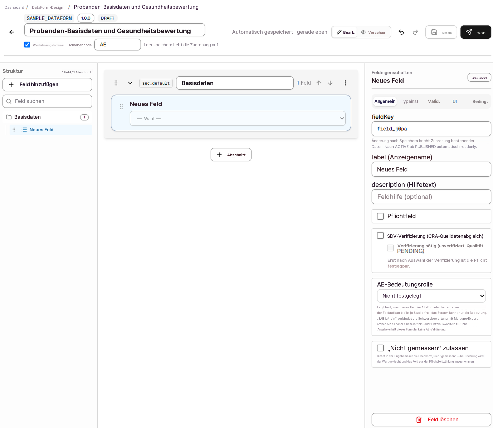
[+ Feld hinzufügen] — Wenn Sie hier den Typ festlegen, wird das Feld erstellt.
Im Strukturbaum wird das neue Feld hinzugefügt.
Auf dem WYSIWYG-Canvas erscheint ein Dropdown mit dem Hinweis — Auswahl —. Die Optionen sind noch leer. 3.2
fieldKey — der tatsächliche Schlüssel, unter dem der Wert gespeichert wird. 2.1
label (Anzeigename) · description (Hilfetext) — der auf dem Bildschirm angezeigte Name und die ergänzende Beschreibung. 2.1
Pflichtfeld · SDV-Verifizierung — werden in 2.2 · 2.3 behandelt.
AE-Bedeutungsrolle — Wie der Bildschirmhinweis sagt: „‚SAE ja/nein‘ verbindet die Schwerebewertung mit Meldung · Export; ordnen Sie es daher einem Ja/Nein- oder Einzelauswahlfeld zu“ — dieser Typ ist ein Zuordnungsziel. Sie wird nur in Projekten verwendet, die ein AE-Formular nutzen.
„Nicht gemessen“ zulassen — wird in 2.4 behandelt.
Typ-Badge „Einzelauswahl“ — der Typ des ausgewählten Felds. Nach dem Hinzufügen kann er nicht mehr geändert werden.
5 Eigenschafts-Tabs — Allgemein · Typeinstellungen · Validierung · UI · Bedingt. Die Kapitel 2–6 dieses Handbuchs entsprechen den einzelnen Tabs.
Zu beachten
Unbedingt prüfen Datenschäden · Formular nicht abschließbar
- • Der Typ kann nach dem Hinzufügen nicht geändert werden. Wenn Sie den falschen Typ gewählt haben, löschen Sie das Feld und fügen Sie es erneut hinzu. (Nur bei Unterelementen von Tabellen und Feldgruppen ist eine Typänderung ausnahmsweise möglich.)
- • Gespeichert wird der
valueder Option. In die Daten gelangt nicht der auf dem Bildschirm sichtbare Text (label), sondern der für die Option festgelegte gespeicherte Wert — diese Unterscheidung wird bei diesem Typ am häufigsten verwechselt. 3.2 - • Nach der Veröffentlichung (PUBLISH) kann die Struktur nicht mehr geändert werden. Sind im laufenden Betrieb Änderungen nötig, veröffentlichen Sie eine neue Version.
Tab „Allgemein“ — Name · Pflicht · Verifizierung · Nicht gemessen
- 2.1fieldKey · Anzeigename · Hilfetext
- 2.2Pflichtfeld
- 2.3SDV-Verifizierung (CRA-Quelldatenabgleich)
- 2.4„Nicht gemessen“ zulassen
2.1fieldKey · Anzeigename · Hilfetext
Überblick
Bereich zur Festlegung des Namens eines Felds. Speicherschlüssel (fieldKey) und angezeigter Name (label) sind unterschiedliche Werte, und bis wann sie geändert werden dürfen, ist verschieden.
Bildschirmbeschreibung
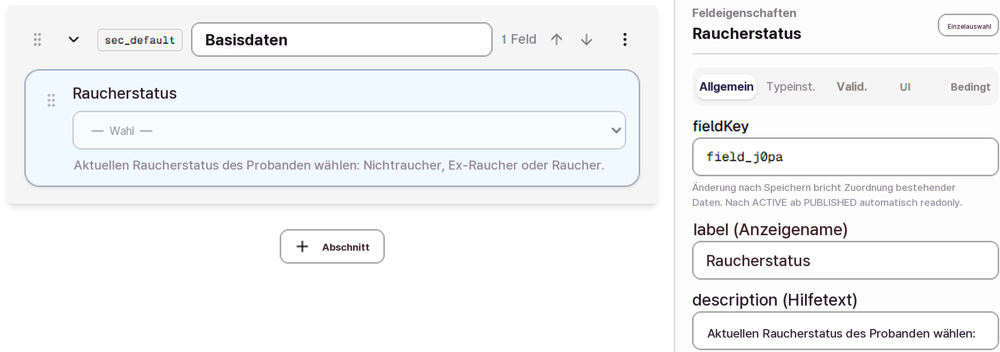
label (Anzeigename) — Geben Sie den Namen des Elements ein, der in der Eingabemaske angezeigt wird.
Erscheint als Feldtitel auf dem Canvas.
description (Hilfetext) — Geben Sie die ergänzende Beschreibung ein, die unter dem Anzeigenamen erscheint. Bleibt sie leer, wird nichts angezeigt.
Erscheint in grauer Schrift unter dem Dropdown.
fieldKey — der tatsächliche Schlüssel, unter dem der Wert gespeichert wird. Beim Hinzufügen eines Felds wird er automatisch vergeben, z. B. field_j0pa, und kann mit Buchstaben · Ziffern · Unterstrichen geändert werden. Er wird auf dem Bildschirm nicht angezeigt — prüfen Sie unbedingt den Abschnitt „Zu beachten“ unten.
Zu beachten
Unbedingt prüfen Datenschäden · Formular nicht abschließbar
- • ⛔ Ändern Sie den fieldKey nach dem Speichern nicht. Wie der Bildschirmhinweis sagt: „Änderung nach Speichern bricht Zuordnung bestehender Daten“ — bereits eingegebene Werte werden nicht mit dem neuen Schlüssel verknüpft und gehen praktisch verloren.
- • Wechselt das Formular nach ACTIVE in den Status PUBLISHED, wird das Eingabefeld fieldKey automatisch schreibgeschützt. Erst ab diesem Zeitpunkt verhindert das System Änderungen; bis dahin müssen Sie selbst darauf achten.
Leicht missverständliches Verhalten
- • Schreiben Sie die Bedeutung der Optionen in den Hilfetext. Steht dort wie in der Aufnahme „Aktuellen Raucherstatus des Probanden wählen: Nichtraucher, Ex-Raucher oder Raucher.“, ist auf einen Blick erkennbar, in welche Kategorien unterteilt wird. Allein anhand der Options-Labels sind die Grenzen oft unklar.
- • Den Anzeigenamen können Sie jederzeit gefahrlos ändern, denn er ist kein Speicherschlüssel, sondern ein Bildschirmtext.
2.2Pflichtfeld
Überblick
Legt fest, ob dieses Element zwingend ausgewählt werden muss. Wenn aktiviert, wird das Speichern blockiert, wenn in der Eingabemaske keine Option ausgewählt wurde.
Bildschirmbeschreibung
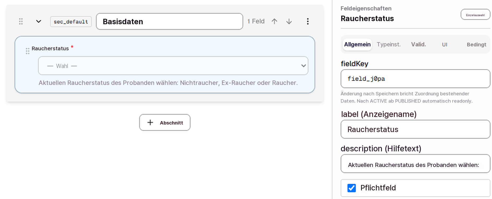
Pflichtfeld — Wenn aktiviert, wird dieses Feld zum Pflichtfeld.
Rechts neben dem Anzeigenamen auf dem Canvas erscheint ein roter Stern (*), der Benutzer auf die Pflicht hinweist.
Zu beachten
Unbedingt prüfen Datenschäden · Formular nicht abschließbar
- • ⛔ Prüfen Sie vor dem Festlegen als Pflichtfeld, ob die Optionen alle Fälle abdecken. Gibt es keine passende Option, wählt der Erfasser irgendeine aus oder kann das Formular nicht abschließen. Fügen Sie bei Bedarf Optionen wie „Nicht zutreffend“ · „Unbekannt“ hinzu 3.2, fragen Sie per bedingter Anzeige nur die Betroffenen Kap. 6, oder lassen Sie „Nicht gemessen“ zu 2.4.
- • Felder, die durch bedingte Anzeige ausgeblendet sind, sind von der Pflichtprüfung befreit. Kap. 6 Das Ausblenden im Tab „UI“ nimmt sie dagegen nicht aus — verwechseln Sie das nicht. 5.3
Leicht missverständliches Verhalten
- • Ob „Nicht zutreffend“ als Option oder als Erklärung „Nicht gemessen“ angelegt wird, hat unterschiedliche Bedeutung — eine Option wird als Bewertungsergebnis gespeichert, die Erklärung „Nicht gemessen“ wird als „nicht bewertbar“ erfasst und aus der Pflichtfeldzählung ausgenommen. 2.4
Hinweis
- • Die Pflichtangabe wird für die Beurteilung des Formularabschlusses verwendet. Wird keine Option ausgewählt, gilt der Wert als leer.
2.3SDV-Verifizierung (CRA-Quelldatenabgleich)
Überblick
SDV (Source Data Verification) ist das Verfahren, bei dem der Monitor (CRA) die eingegebenen Werte mit den Quelldaten der Prüfstelle abgleicht. Hier legen Sie fest, ob dieses Feld Gegenstand dieses Abgleichs ist. Diese Einstellung ist bei allen Feldtypen gleich, daher ist auch der Bildschirm unabhängig vom Typ identisch.
Bildschirmbeschreibung
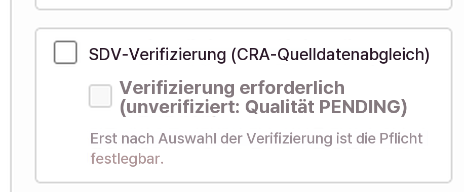

SDV-Verifizierung (CRA-Quelldatenabgleich) — Wenn aktiviert, wird dieses Feld in die Abgleichliste des CRA aufgenommen.
Mit der Aktivierung wird das Unterelement aktiv.
Verifizierung erforderlich (unverifiziert: Qualität PENDING) — kann erst festgelegt werden, nachdem ① aktiviert wurde. Wenn aktiviert, bleibt der Qualitätsstatus der betreffenden Daten auf PENDING, bis der CRA den Abgleich abgeschlossen hat.
Bevor ① aktiviert ist, ist ② ausgegraut und inaktiv. Wie der Bildschirmhinweis sagt: „Erst nach Auswahl der Verifizierung ist die Pflicht festlegbar.“
Zu beachten
Unbedingt prüfen Datenschäden · Formular nicht abschließbar
- • Wird der Wert geändert, wird die Verifizierung aufgehoben. Wenn Sie die Option ändern, fällt der Qualitätsstatus auf PENDING zurück, und der CRA muss erneut abgleichen.
Leicht missverständliches Verhalten
- • Legen Sie für die Kategoriebeurteilung vorab Abgleichkriterien fest. Optionen, die eine Beurteilung erfordern, wie „Raucher“ und „Ex-Raucher“, können je nach Person, die die Quelldaten prüft, unterschiedlich gelesen werden — stehen die Beurteilungskriterien im Hilfetext 2.1, geht der Abgleich schneller.
- • SDV kann nicht von der Person durchgeführt werden, die die Daten eingegeben hat. Das System erzwingt eine Kreuzprüfung (Cross-User SoD); eingebende und verifizierende Person müssen daher zwingend verschieden sein.
Hinweis
- • Der Qualitätsstatus durchläuft PENDING → VERIFIED → CLEAN. Ist auch nur ein Feld mit Verifizierungspflicht unverifiziert, können die betreffenden Daten nicht CLEAN werden.
2.4„Nicht gemessen“ zulassen
Überblick
Eine Funktion, mit der Fälle, in denen die Antwort nicht ermittelt werden kann, als eigener Wert erfasst werden. Wird keine Option ausgewählt, lässt sich „noch nicht eingegeben“ nicht von „geprüft, aber unbekannt“ unterscheiden. Diese Erklärung trennt beides.
Bildschirmbeschreibung

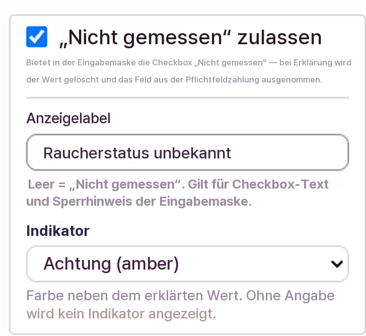
„Nicht gemessen“ zulassen — Wenn aktiviert, erscheint in der Eingabemaske die Checkbox „Nicht gemessen“, und die beiden folgenden Elemente werden angezeigt.
Anzeigelabel — Bleibt es leer, gilt der Standardwert „Nicht gemessen“.
Wenn Sie es auf Raucherstatus unbekannt ändern, gilt dieser Text sowohl für die Checkbox in der Eingabemaske als auch für den Sperrhinweis.
Indikator — Standardwert ist Keine.
Wenn Sie ihn auf Achtung (amber) ändern, erscheint neben dem erklärten Wert eine Markierung in dieser Farbe.
Zu beachten
Unbedingt prüfen Datenschäden · Formular nicht abschließbar
- • Legen Sie zuerst fest, ob „Unbekannt“ als Option oder als Erklärung angelegt wird. Gibt es beides, weiß der Erfasser nicht, was er verwenden soll, und dieselbe Situation wird auf zwei Arten gespeichert. Vereinheitlichen Sie auf eine Methode und geben Sie diese im Hilfetext an. 2.2
- • Bei der Erklärung wird der Wert gelöscht. Wie der Bildschirmhinweis sagt — „bei Erklärung wird der Wert gelöscht und das Feld aus der Pflichtfeldzählung ausgenommen.“
Leicht missverständliches Verhalten
- • Erklärte Felder werden aus der Pflichtfeldzählung ausgenommen. Das Formular kann daher auch bei einem Pflichtfeld abgeschlossen werden.
Hinweis
- • Ohne festgelegten Indikator wird die Farbmarkierung nicht angewendet. Wenn eine Hervorhebung nötig ist, wählen Sie z. B. Achtung (amber).
Tab „Typeinstellungen“ — Optionen erstellen
- 3.1Gesamtaufbau des Tabs „Typeinstellungen“
- 3.2Optionsliste (value · label · Aktiv · Reihenfolge · Löschen)
- 3.3Anzeigeart (displayStyle)
- 3.4Optionsausrichtung (nur Radio)
- 3.5Standardwert (defaultValue)
3.1Gesamtaufbau
Überblick
In diesem Tab erstellen Sie die Optionen. Anders als bei anderen Typen gibt es keine Länge · keinen Bereich · kein Format; Sie legen nur fest, welche Optionen in welcher Form angezeigt werden. Bei diesem Typ werden tatsächlich vier Elemente verwendet.
Bildschirmbeschreibung
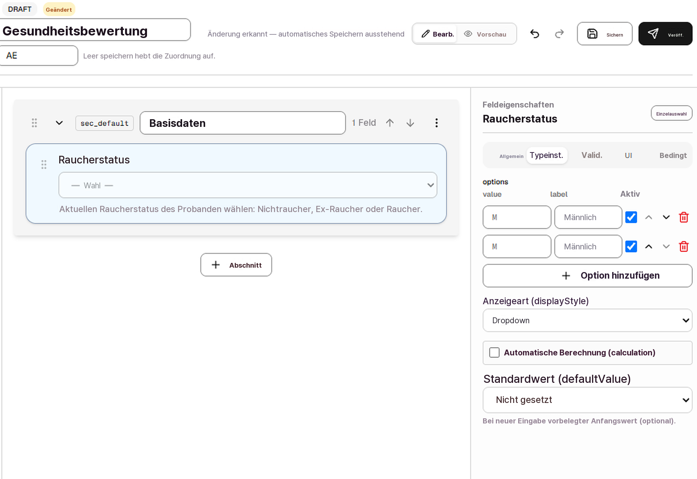
options — die Optionsliste. Sie besteht aus den drei Spalten value · label · Aktiv sowie Schaltflächen für Reihenfolge · Löschen. 3.2
[+ Option hinzufügen] — fügt eine weitere Optionszeile hinzu. 3.2
Anzeigeart (displayStyle) — wählen Sie zwischen Dropdown und Radio. 3.3
Automatische Berechnung (calculation) — das Element wird angezeigt, wird bei diesem Typ aber nicht verwendet. Es berechnet Zahlenwerte aus anderen Feldwerten; verwenden Sie es daher beim Typ Zahl.
Standardwert (defaultValue) — die Option, die bei einer neuen Eingabe vorausgewählt ist. 3.5
Zu beachten
Unbedingt prüfen Datenschäden · Formular nicht abschließbar
- • Anfangs sind zwei leere Optionszeilen vorhanden. Die hellgrauen Texte
M·Männlichsind Eingabebeispiele und keine eingestellten Werte. Wird so gespeichert, entsteht ein Feld ohne Optionen. - • Die Optionen werden direkt auf diesem Bildschirm aufgelistet. Auch wenn mehrere Formulare dieselben Optionen verwenden, müssen sie jeweils einzeln eingegeben werden; achten Sie daher darauf, Anzeigetext und gespeicherte Werte in allen Formularen identisch zu halten. 3.2
Leicht missverständliches Verhalten
- • Wenn Sie Radio wählen, erscheint ein weiteres Element. „Optionsausrichtung“ wird nur angezeigt, wenn die Anzeigeart Radio ist. 3.4
Hinweis
- • Der Aufbau dieses Tabs ist durch den beim Erstellen des Felds gewählten Typ festgelegt. Bei einem anderen Typ ändern sich auch die Elemente dieses Tabs.
3.2Optionsliste (value · label · Aktiv · Reihenfolge · Löschen)
Überblick
Erstellen Sie die Optionen eine pro Zeile. Eine Zeile besteht aus gespeichertem Wert (value) · Anzeigetext (label) · Aktiv-Status; mit den Schaltflächen rechts können Sie die Reihenfolge ändern oder die Zeile löschen. Dieser Bildschirm ist der Kern dieses Typs.
Bildschirmbeschreibung
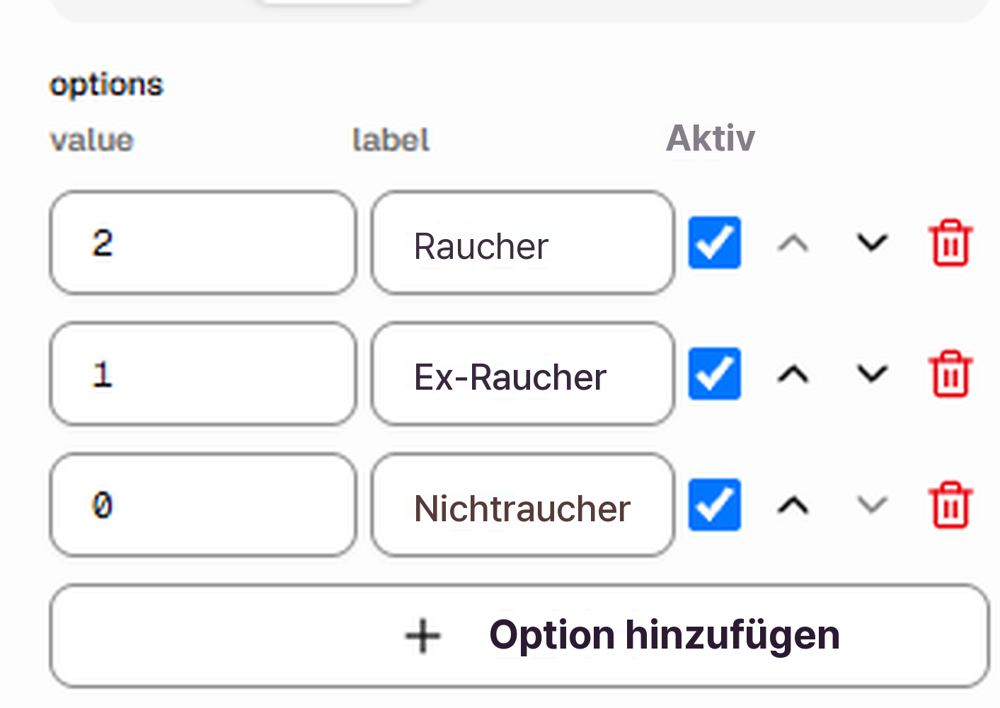
value — der Wert, der in den Daten gespeichert wird. In der Aufnahme 2 · 1 · 0. Auch wenn bedingte Anzeige 6.2 oder Validierungsregeln 4.3 auf dieses Feld verweisen, wird dieser Wert verwendet.
label — der auf dem Bildschirm sichtbare Text. In der Aufnahme Raucher · Ex-Raucher · Nichtraucher. Er gelangt nicht in die Daten.
Aktiv · Reihenfolge (↑↓) · Löschen (🗑) — Wenn Sie Aktiv deaktivieren, können Sie die Option ohne sie zu löschen aus der Liste herausnehmen. Mit den Pfeilen ändern Sie die Anzeigereihenfolge, mit dem Papierkorb löschen Sie die Zeile.
[+ Option hinzufügen] — fügt eine weitere Optionszeile hinzu. Wiederholen Sie dies so oft wie nötig.
Zu beachten
Unbedingt prüfen Datenschäden · Formular nicht abschließbar
- • ⛔ Ändern Sie value nach der Veröffentlichung nicht. Sind bereits Daten mit
2gespeichert und Sie ändern value aufS, lässt sich nicht mehr erkennen, zu welcher Option die bestehenden Werte gehören. Wenn Sie nur die Beschriftung korrigieren möchten, ändern Sie nur label — label ist jederzeit sicher. - • ⛔ Denken Sie beim Festlegen von value auch an die Auswertung. Mit
0 · 1 · 2wie in der Aufnahme ist die Reihenfolge der Abstufung im Wert enthalten; verwenden Sie dagegen Zahlen für Kategorien ohne Reihenfolge, wird eine nicht vorhandene Reihenfolge hineingelesen. Gibt es keine Reihenfolge, sind aussagekräftige Zeichenketten wieNEVER·FORMERsicherer. - • Seien Sie vorsichtig, wenn Sie Aktiv bei einer Option deaktivieren, für die bereits Werte gespeichert sind. Bei neuen Eingaben ist sie dann nicht mehr auswählbar, die bestehenden Daten bleiben aber unverändert — Werte, die nicht in der Liste stehen, mischen sich in die Daten; prüfen Sie daher zuerst die Auswirkungen.
Leicht missverständliches Verhalten
- • Die Reihenfolge ist die Reihenfolge, in der der Erfasser liest. Ordnen Sie abgestufte Elemente wie den Schweregrad einheitlich von schwach nach stark — unterscheidet sich die Reihenfolge je Formular, nehmen Fehlauswahlen zu.
Rollen der drei Spalten
| Spalte | Inhalt | In den Daten gespeichert? | Änderbar? |
|---|---|---|---|
| value | Gespeicherter Wert (z. B. 2) | Gespeichert | Nach der Veröffentlichung nicht ändern |
| label | Bildschirmtext (z. B. Raucher) | Nicht gespeichert | Jederzeit änderbar |
| Aktiv | Ob die Option angeboten wird | Nicht gespeichert | Im laufenden Betrieb nur mit Bedacht ändern |
3.3Anzeigeart (displayStyle)
Überblick
Legt fest, in welcher Form die Optionen angezeigt werden. Wählen Sie zwischen Dropdown (eingeklappt, wird aufgeklappt) und Radio (alle Optionen sichtbar). Der gespeicherte Wert ist in beiden Fällen gleich.
Bildschirmbeschreibung
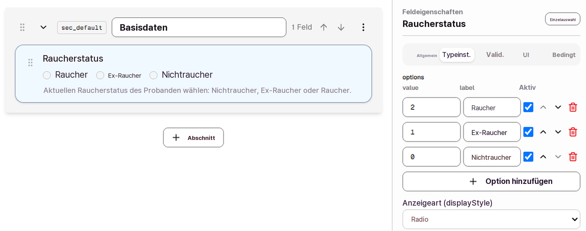
Anzeigeart (displayStyle) — wählen Sie in der Auswahlliste. Standard ist Dropdown; die Aufnahme zeigt den Zustand nach der Umstellung auf Radio.
Der Canvas wechselt zu drei Radiobuttons, und alle Optionen werden sichtbar. Beim Dropdown war nur eine Zeile — Auswahl — zu sehen.
Zu beachten
Leicht missverständliches Verhalten
- • Bei wenigen Optionen ist Radio besser. Man kann ohne Aufklappen direkt wählen, und da die vorhandenen Optionen auf einen Blick sichtbar sind, gibt es weniger Fehlauswahlen.
- • Bei vielen Optionen ist Dropdown besser. Mit Radio wird der Bildschirm lang, und die nachfolgenden Elemente werden nach unten verschoben.
- • Wenn Sie Radio wählen, erscheint das Element „Optionsausrichtung“. Damit legen Sie fest, wie viele pro Zeile angeordnet werden. 3.4
Hinweis
- • Eine Änderung der Anzeigeart ändert die gespeicherten Werte nicht. Da sich nur die Darstellung auf dem Bildschirm ändert, hat eine Änderung im laufenden Betrieb keine Auswirkung auf die Daten.
Unterschied der beiden Arten
| Anzeigeart | Bildschirm | Geeignet, wenn |
|---|---|---|
| Dropdown (Standard) | Eingeklappt, wird aufgeklappt | Viele Optionen vorhanden sind · das Formular kurz bleiben soll |
| Radio | Alle Optionen sichtbar | Wenige Optionen vorhanden sind (2~5) · schnell gewählt werden soll |
3.4Optionsausrichtung (nur Radio)
Überblick
Legt fest, wie viele Radiobuttons pro Zeile angeordnet werden. Dieses Element erscheint nur, wenn die Anzeigeart Radio ist, und ist beim Dropdown nicht sichtbar.
Bildschirmbeschreibung
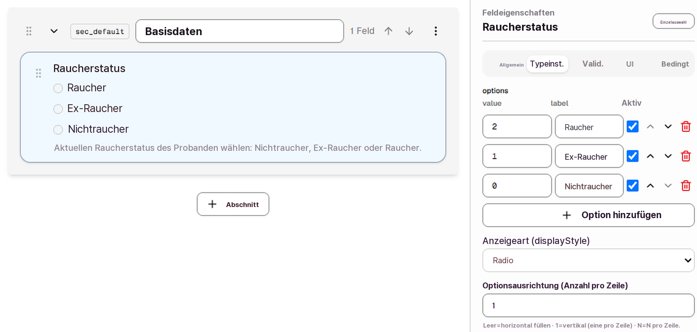
Optionsausrichtung (Anzahl pro Zeile) — Geben Sie eine Zahl ein. In der Aufnahme 1.
Die Radiobuttons werden einzeln untereinander angeordnet. In 3.3 standen sie nebeneinander.
Zu beachten
Unbedingt prüfen Datenschäden · Formular nicht abschließbar
- • Wenn Sie die Anzeigeart auf Dropdown zurückstellen, verschwindet diese Einstellung vom Bildschirm. Prüfen Sie nach erneutem Umstellen auf Radio, ob der Wert erhalten geblieben ist. 3.3
Leicht missverständliches Verhalten
- • Setzen Sie Optionen mit langem Text auf vertikal (1). Werden sie horizontal aufgefüllt, liegen die Zeilenumbrüche unregelmäßig, und es ist unklar, welcher Text zu welchem Button gehört.
- • Für wichtige Beurteilungselemente ist die vertikale Anordnung sicherer. Liegen die Optionen untereinander, wird seltener versehentlich der benachbarte Button gedrückt.
- • Die Wirkung hängt auch von der Layoutbreite 5.2 ab. Wenn Sie die Feldbreite verringern, passt die festgelegte Anzahl möglicherweise nicht in eine Zeile.
Anordnung je nach Eingabewert
| Eingabe | Anordnung | Geeignet, wenn |
|---|---|---|
| Leer (nicht festgelegt) | Horizontal füllen — so viele nebeneinander, wie die Breite zulässt | Optionstexte kurz sind |
1 | Vertikal — eine pro Zeile | Texte lang sind oder Fehlauswahlen reduziert werden müssen |
N | N pro Zeile | eine gleichmäßige Anordnung in 2 · 3 Spalten gewünscht ist |
3.5Standardwert (defaultValue)
Überblick
Die Option, die beim Start einer neuen Eingabe vorausgewählt ist. Sie wählen sie aus den erstellten Optionen. Bei diesem Typ ist das Ergebnis der Einstellung in der Bearbeitungsansicht nicht sichtbar; Sie müssen zur [Vorschau] wechseln.
Bildschirmbeschreibung
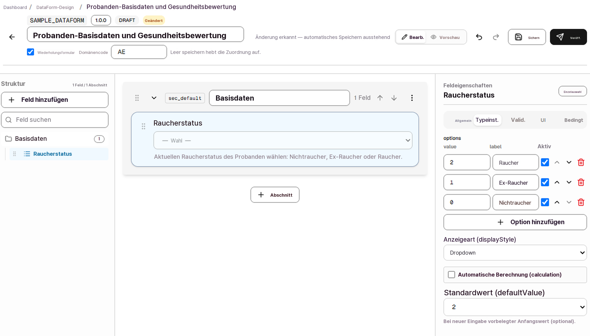
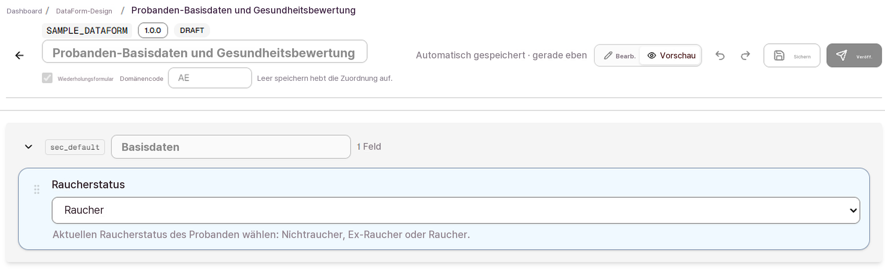
Standardwert (defaultValue) — wählen Sie den Wert, der bei einer neuen Eingabe vorausgewählt ist. Die Liste zeigt den gespeicherten Wert (value), daher wurde in der Aufnahme 2 gewählt. (optional)
Auf dem Canvas der Bearbeitungsansicht ist weiterhin nur — Auswahl — zu sehen. Das bedeutet nicht, dass die Einstellung nicht übernommen wurde, sondern dass die Bearbeitungsansicht den Standardwert nicht darstellt.
[Vorschau] — wechselt oben zur Vorschau.
Im Dropdown ist „Raucher“ ausgewählt. Hier sehen Sie, dass Sie beim Einstellen nach value (2) wählen und auf dem Bildschirm das label erscheint.
Zu beachten
Unbedingt prüfen Datenschäden · Formular nicht abschließbar
- • ⛔ Legen Sie für Elemente, die eine Beurteilung erfordern, keinen Standardwert fest. Ist eine Option vorausgewählt, kann der Erfasser sie ohne Prüfung übergehen, und es lässt sich nicht mehr unterscheiden, ob tatsächlich bewertet wurde. Legen Sie insbesondere bei Elementen zur Sicherheits- · Wirksamkeitsbeurteilung keinen fest.
- • Der Standardwert wird per value festgelegt und erscheint auf dem Bildschirm als label. Damit durch eine Verwechslung der beiden nicht eine falsche Option als Standard gesetzt wird, prüfen Sie nach dem Festlegen in der Vorschau auch den Text. 3.2
Leicht missverständliches Verhalten
- • Schließen Sie nicht allein anhand der Bearbeitungsansicht darauf, dass die Einstellung nicht übernommen wurde. Bei diesem Typ erscheint der Standardwert nicht auf dem Canvas der Bearbeitungsansicht — prüfen Sie ihn unbedingt in der [Vorschau].
- • Der Standardwert gilt nur für neu erstellte Eingaben. Bereits gespeicherte Daten werden nicht geändert.
Tab „Validierung“ — Wertprüfung vor dem Speichern
- 4.1Ohne Validierungsregeln
- 4.2Regel hinzufügen
- 4.3Fertig erstellte Regel — Vergleich mit anderem Feld
4.1Ohne Validierungsregeln
Überblick
In diesem Tab werden Regeln gesammelt, die vor dem Speichern prüfen, ob ein Wert die Bedingungen erfüllt. Bei der Einzelauswahl kann nur aus den erstellten Optionen gewählt werden, daher ist keine Bereichsprüfung nötig; dafür verwenden Sie diesen Tab, um die Beziehung zu anderen Feldern zu prüfen. 4.3
Bildschirmbeschreibung
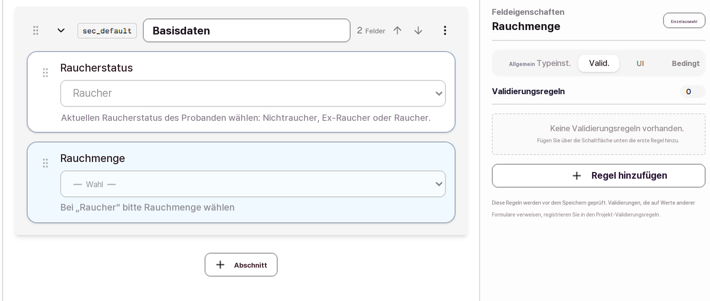
[+ Regel hinzufügen] — erstellt die erste Regel. Der Bildschirm nach der Auswahl wird in 4.2 erläutert.
Bereich Validierungsregeln und Anzahl der registrierten Regeln. Anfangs 0 Regeln.
Ohne Regeln erscheint der Hinweis „Keine Validierungsregeln vorhanden. Fügen Sie über die Schaltfläche unten die erste Regel hinzu.“
Hinweis unten — „Diese Regeln werden vor dem Speichern geprüft. Validierungen, die auf Werte anderer Formulare verweisen, registrieren Sie in den Projekt-Validierungsregeln.“
Zu beachten
Unbedingt prüfen Datenschäden · Formular nicht abschließbar
- • ⛔ Validierungen, die auf Werte anderer Formulare verweisen, können hier nicht erstellt werden. Registrieren Sie solche Regeln im Bildschirm „Projekt-Validierungsregeln“. Dieser Tab behandelt nur Prüfungen, die innerhalb desselben Formulars abgeschlossen sind.
Leicht missverständliches Verhalten
- • Die Aufnahme enthält zwei Felder: „Raucherstatus“ und „Rauchmenge“ — die Bedeutung des zweiten Felds hängt vom ersten ab; daher wird in 4.3 eine Regel erstellt, die beide Felder verknüpft.
- • Sie müssen keine Regeln erstellen. Für die meisten Elemente genügen die Optionen allein — verwenden Sie Regeln nur, wenn eine Beziehung wirklich nötig ist.
4.2Regel hinzufügen
Überblick
Wenn Sie in 4.1 [+ Regel hinzufügen] wählen, wird der Block Regel 1 erstellt. Anfangs ist Wertebereich eingestellt, bei der Einzelauswahl wird aber tatsächlich Vergleich mit anderem Feld verwendet — wenn Sie ruleType ändern, ändert sich der Bildschirm. 4.3
Bildschirmbeschreibung
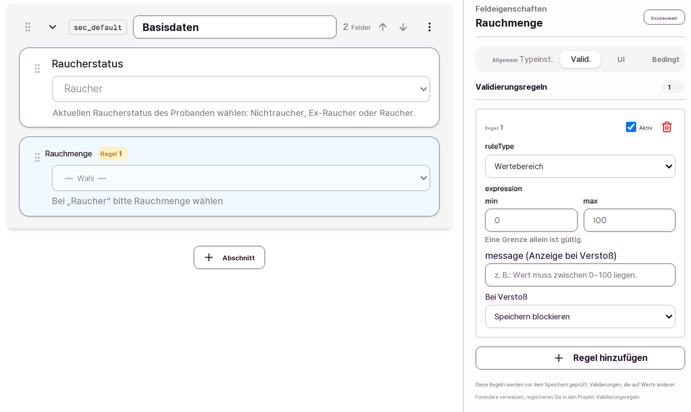
[+ Regel hinzufügen] — erstellt eine weitere Regel. (Dieselbe Schaltfläche, die Sie in 4.1 gewählt haben.)
Der Block „Regel 1“ wird erstellt, und neben dem Anzeigenamen auf dem Canvas erscheint das Badge „Regel 1“.
Die Regelanzahl ändert sich auf 1 Regel.
Checkbox Aktiv und Symbol Löschen — Sie können die Regel vorübergehend aussetzen, ohne sie zu löschen.
ruleType — die Art der Regel. Anfangs ist Wertebereich ausgewählt.
min — das Feld für die Untergrenze, das bei Auswahl von Wertebereich erscheint.
max — das Feld für die Obergrenze, das unter derselben Bedingung erscheint.
Die hellgrauen Texte 0 · 100 und „z. B.: Wert muss zwischen 0~100 liegen.“ sind Eingabebeispiele und keine eingestellten Werte.
message (Anzeige bei Verstoß) — der Text, der Benutzern bei einem Regelverstoß angezeigt wird.
Bei Verstoß — Wählen Sie Speichern blockieren oder Warnung. (Je nach ruleType ist die Auswahl teils nicht möglich — 4.3)
Zu beachten
Unbedingt prüfen Datenschäden · Formular nicht abschließbar
- • ⛔ Verwenden Sie bei der Einzelauswahl nicht einfach „Wertebereich“. Ist der gespeicherte Wert eine Zeichenkette wie
NEVER, ist kein Größenvergleich möglich; und selbst bei Zahlen können Werte außerhalb der Optionen gar nicht erst eingegeben werden, sodass es nichts zu prüfen gibt. 3.2 - • Bleibt message leer, wissen Benutzer nicht, warum gesperrt wurde. Geben Sie unbedingt einen Text ein.
Leicht missverständliches Verhalten
- • Nützlich ist bei diesem Typ „Vergleich mit anderem Feld“. Damit wird eine Beziehung geprüft wie „dieses Element kann nur beantwortet werden, wenn bei der vorherigen Frage ein bestimmter Wert ausgewählt wurde“. 4.3
- • Sie können mehrere Regeln erstellen; gespeichert wird nur, wenn alle aktiven Regeln erfüllt sind.
4.3Fertig erstellte Regel — Vergleich mit anderem Feld
Überblick
Wenn Sie ruleType auf Vergleich mit anderem Feld ändern, ändert sich der Bildschirm vollständig. Da mit dem Wert eines anderen Felds im selben Formular verglichen wird, lassen sich Beziehungen abbilden, bei denen die Zulässigkeit dieses Elements von der Antwort auf die vorherige Frage abhängt.
Bildschirmbeschreibung
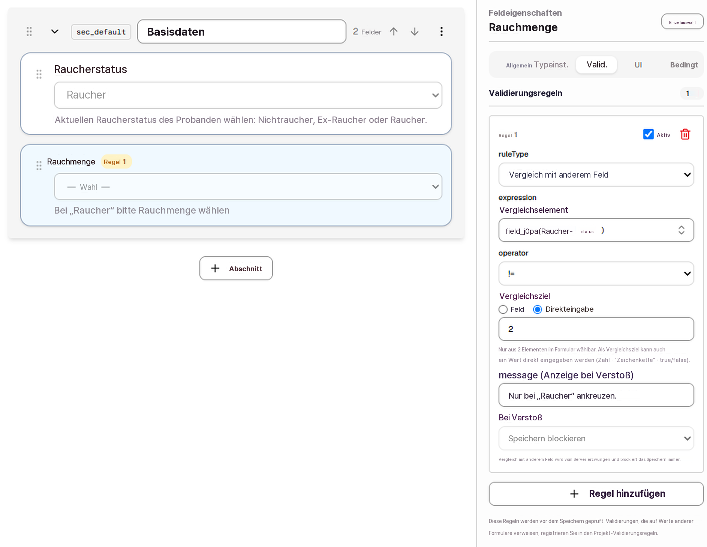
ruleType = Vergleich mit anderem Feld — Wenn ausgewählt, werden die Felder darunter für den Vergleich umgestellt.
Vergleichselement — wählen Sie ein anderes Feld im selben Formular. In der Aufnahme field_j0pa(Raucherstatus).
operator — die Vergleichsart. In der Aufnahme != (ungleich).
Vergleichsziel — wählen Sie zwischen Feld und Direkteingabe. In der Aufnahme wurde per Direkteingabe 2 eingegeben — der gespeicherte Wert (value) von „Raucherstatus“. 3.2
Bildschirmhinweis — „Nur aus 2 Elementen im Formular wählbar. Als Vergleichsziel kann auch ein Wert direkt eingegeben werden (Zahl · "Zeichenkette" · true/false).“
message (Anzeige bei Verstoß) — in der Aufnahme Nur bei „Raucher“ ankreuzen.
Bei Verstoß — grau und inaktiv. Wie der Bildschirmhinweis sagt: „Vergleich mit anderem Feld wird vom Server erzwungen und blockiert das Speichern immer.“ — bei dieser Regel kann keine Warnung gewählt werden; sie ist auf Speichern blockieren festgelegt.
Zu beachten
Unbedingt prüfen Datenschäden · Formular nicht abschließbar
- • ⛔ Prüfen Sie die Richtung der Bedingung unbedingt vor der Veröffentlichung. Grundsätzlich werden Validierungsregeln als Bedingung formuliert, die erfüllt sein muss; die Einstellung in der Aufnahme (
Raucherstatus != 2) und die message („Nur bei ‚Raucher‘“) lesen sich jedoch gegensätzlich. Da ein einziges Vergleichszeichen die Bedeutung umkehrt, prüfen Sie nach der Einstellung das tatsächliche Verhalten in der Vorschau. - • ⛔ Als Vergleichsziel geben Sie nicht das label, sondern den value ein. Wenn Sie „Raucher“ eingeben, ist kein Vergleich möglich — prüfen Sie zuerst den gespeicherten Wert in der Optionsliste. 3.2
Leicht missverständliches Verhalten
- • Diese Regel kann nicht als Warnung eingestellt werden. Da Bei Verstoß auf Speichern blockieren festgelegt ist, verwenden Sie sie nur für Beziehungen, die unbedingt verhindert werden müssen. Wenn Sie nur informieren möchten, ist es besser, per bedingter Anzeige Kap. 6 gar nicht erst zu fragen.
- • Bei derselben Beziehung hat die bedingte Anzeige Vorrang — was gar nicht erst abgefragt wird, kann auch nicht falsch eingegeben werden. Kap. 6
Tab „UI“ — Bildschirmanordnung und Hinweistexte
- 5.1Gesamtaufbau des Tabs „UI“
- 5.2Layoutbreite
- 5.3Schreibgeschützt · Ausblenden
- 5.4placeholder · helpText
5.1Gesamtaufbau
Überblick
In diesem Tab legen Sie nicht den Wert selbst fest, sondern wie das Feld auf dem Bildschirm angeordnet und erläutert wird. Die Einstellungen dieses Tabs ändern die gespeicherten Daten nicht. Ausblenden verbirgt das Feld jedoch nur auf dem Bildschirm und nimmt es nicht aus der Pflichtfeldzählung aus; lesen Sie daher vor der Verwendung 5.3.
Bildschirmbeschreibung
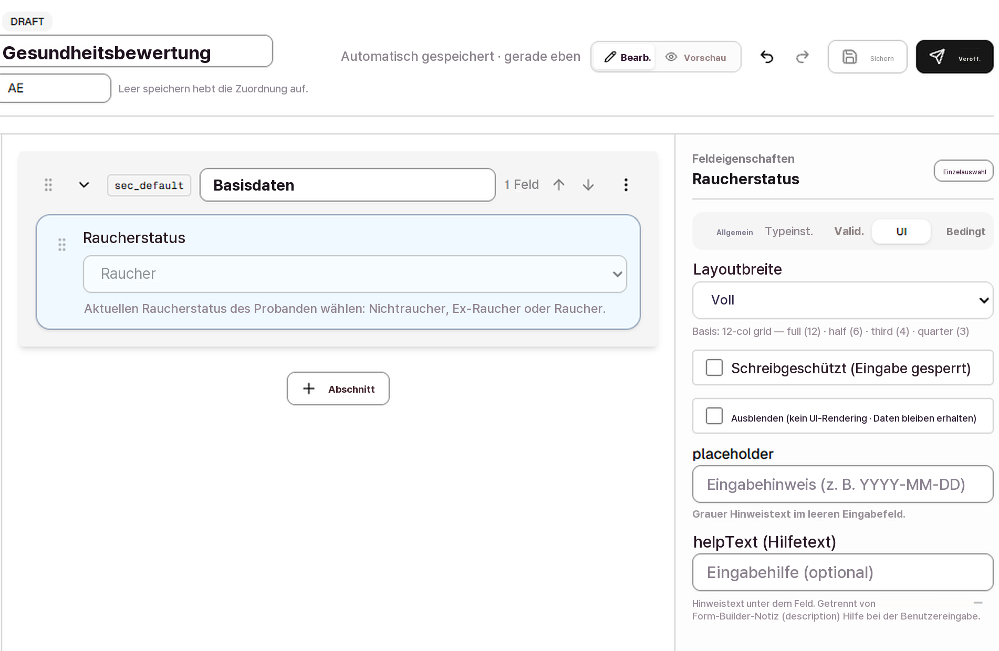
Layoutbreite — die Breite, die dieses Feld in einer Zeile einnimmt. Die Bedeutung der Optionen steht im Hinweis direkt darunter: „Basis: 12-col grid — full (12) · half (6) · third (4) · quarter (3)“. 5.2
Schreibgeschützt (Eingabe gesperrt) — wird angezeigt, kann aber nicht geändert werden. 5.3
Ausblenden (kein UI-Rendering · Daten bleiben erhalten) — verbirgt das Feld auf dem Bildschirm. 5.3
placeholder — Hinweis, der angezeigt wird, solange kein Wert vorhanden ist. Bei diesem Typ ersetzt er — Auswahl —. 5.4
helpText (Hilfetext) — Hinweistext, der unter dem Feld angezeigt wird. 5.4
Zu beachten
Unbedingt prüfen Datenschäden · Formular nicht abschließbar
- • Die Auswirkung der Breite hängt von der Anzeigeart ab. Ein Dropdown bleibt auch schmal einzeilig und ist unproblematisch, bei Radio brechen die Optionen jedoch um, und die Anordnung gerät durcheinander. 3.3 · 3.4 · 5.2
Leicht missverständliches Verhalten
- • Die hellgrauen Texte
Eingabehinweis (z. B. YYYY-MM-DD)·Eingabehilfe (optional)in den Eingabefeldern sind Eingabebeispiele und keine eingestellten Werte.
Hinweis
- • Standard ist Layoutbreite = Voll; Schreibgeschützt · Ausblenden sind deaktiviert.
- • Es gibt keine Einstellung für Farbe oder Größe der Optionen. Die Steuerung erfolgt nur über die Anzeigeart 3.3 und die Ausrichtung 3.4.
5.2Layoutbreite
Überblick
Wählen Sie die Breite, die dieses Feld im 12-column grid (eine Zeile in 12 Spalten geteilt) einnimmt. Ist die Anzeigeart Dropdown, bleibt das Feld auch bei geringerer Breite einzeilig und ist relativ sicher.
Bildschirmbeschreibung
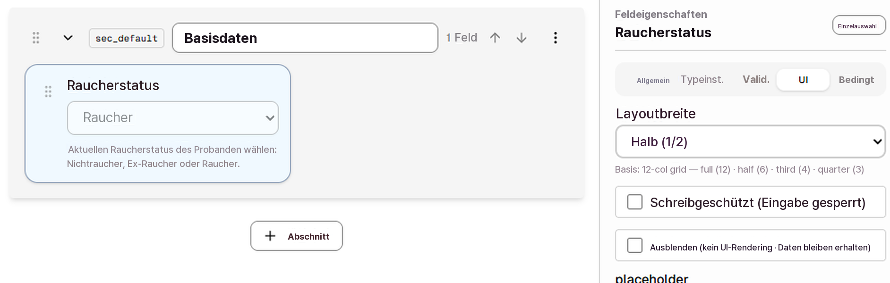
Layoutbreite — Legen Sie die Breite in der Auswahlliste fest. Im Beispiel Halb (1/2).
Das Dropdown schrumpft auf halbe Breite. Auch der Hilfetext bricht entsprechend der geringeren Breite in zwei Zeilen um.
Zu beachten
Unbedingt prüfen Datenschäden · Formular nicht abschließbar
- • ⛔ Verringern Sie bei Feldern, die als Radio angezeigt werden, nicht die Breite. Die Optionen stehen nebeneinander; reicht die Breite nicht, liegen die Zeilenumbrüche unregelmäßig, und der Text wird schwer lesbar. Wenn Sie die Breite unbedingt verringern müssen, stellen Sie zugleich die Ausrichtung auf 1 (vertikal) um. 3.4
Leicht missverständliches Verhalten
- • Kurze Optionen wie Ja/Nein passen gut in halbe Breite. Stellen Sie zwei zusammengehörige Fragen nebeneinander, wird das Formular kürzer.
- • Wenn Sie die Breite verringern, wird das nächste Feld in derselben Zeile angeordnet. Übersteigt die Summe einer Zeile 12, wird in die nächste Zeile umgebrochen.
Hinweis
- • Auf Geräten mit schmalem Bildschirm können die Felder unabhängig von der Einstellung einzeln untereinander angeordnet werden.
Breitenoptionen
| Option | Belegte Spalten | Beim Dropdown | Bei Radio |
|---|---|---|---|
| Voll | 12 | Ausreichend Platz | Optionen nebeneinander |
| Halb (1/2) | 6 | Unproblematisch — Paarelemente nebeneinander | Optionen können umbrechen |
| Drittel (1/3) | 4 | Lange Texte können abgeschnitten werden | Nicht empfohlen |
| Viertel (1/4) | 3 | Nur kurze Optionen | Nicht empfohlen |
5.3Schreibgeschützt · Ausblenden
Überblick
Damit wird das Feld gegen Änderungen gesperrt oder nicht angezeigt. In beiden Fällen bleiben gespeicherte Werte unverändert erhalten.
Bildschirmbeschreibung
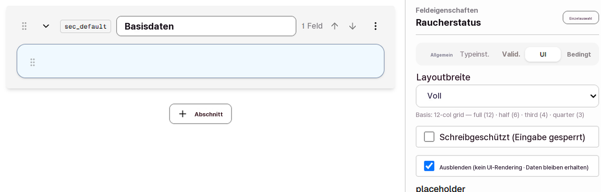
Schreibgeschützt (Eingabe gesperrt) — der ausgewählte Wert ist sichtbar, kann vom Benutzer aber nicht geändert werden. (In dieser Aufnahme deaktiviert)
Ausblenden (kein UI-Rendering · Daten bleiben erhalten) — wird in der Eingabemaske nicht angezeigt. Bereits gespeicherte Werte werden nicht gelöscht.
Das Feld verschwindet vom Canvas, und der Abschnitt wirkt leer.
Zu beachten
Unbedingt prüfen Datenschäden · Formular nicht abschließbar
- • ⛔ Blenden Sie keine Pflichtfelder aus. Das Ausblenden im Tab „UI“ verbirgt das Feld nur auf dem Bildschirm und nimmt es nicht aus der Pflichtfeldzählung aus — ein Element, bei dem Benutzer nichts auswählen können, bleibt im Nenner, und das Formular kann nicht abgeschlossen werden.
- • Ausblenden löscht keine Daten. Das Feld verschwindet nur vom Bildschirm; um den Wert zu löschen, müssen Sie das Feld löschen.
Leicht missverständliches Verhalten
- • Es unterscheidet sich vom Ausblenden im Tab „Bedingt“. Felder, die ausgeblendet sind, weil die Bedingung nicht zutrifft, werden aus der Pflichtfeldzählung ausgenommen Kap. 6. Obwohl beide als „Ausblenden“ bezeichnet werden, ist die Behandlung bei der Validierung genau entgegengesetzt; unterscheiden Sie daher beides.
- • Schreibgeschützt und Ausblenden sind verschieden. Schreibgeschützt bedeutet „anzeigen, aber nicht änderbar“, Ausblenden „nicht anzeigen“. Wenn eine bereits gewählte Antwort sichtbar bleiben soll, verwenden Sie Schreibgeschützt.
Hinweis
- • Auch ausgeblendet bleibt das Feld im Strukturbereich erhalten — Sie können es erneut auswählen und die Einstellung zurücksetzen.
5.4placeholder · helpText
Überblick
Zwei Texte, die Benutzern mitteilen, was sie auswählen sollen. Der placeholder hat bei diesem Typ eine andere Rolle als bei anderen Typen — er ist kein hellgrauer Text im Eingabefeld, sondern ersetzt den Text im noch nicht ausgewählten Zustand.
Bildschirmbeschreibung
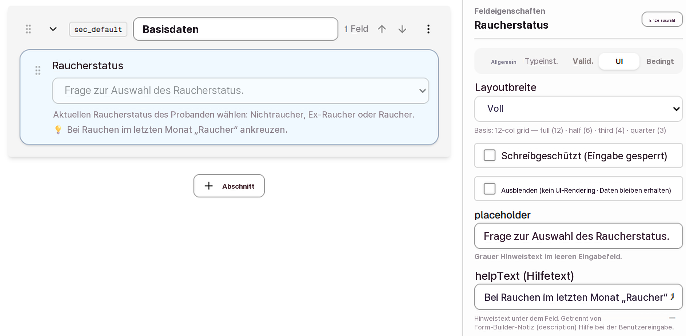
— Auswahl —, helpText steht unter dem Feldplaceholder — geben Sie den Text für den nicht ausgewählten Zustand ein. In der Aufnahme Frage zur Auswahl des Raucherstatus.
Er ersetzt — Auswahl — im Dropdown. Sobald ein Wert gewählt wird, verschwindet dieser Text, und das gewählte label wird angezeigt.
helpText (Hilfetext) — geben Sie den Hinweistext ein, der unter dem Feld angezeigt wird. In der Aufnahme Bei Rauchen im letzten Monat „Raucher“ ankreuzen.
Erscheint unter dem Feld zusammen mit einem Glühbirnensymbol (💡). Er verschwindet auch nach der Auswahl eines Werts nicht.
Zu beachten
Unbedingt prüfen Datenschäden · Formular nicht abschließbar
- • Schreiben Sie das Auswahlkriterium in den helpText. Wird wie in der Aufnahme ein abgrenzendes Kriterium wie „bei Rauchen im letzten Monat ‚Raucher‘ ankreuzen“ angegeben, verringern sich die Unterschiede zwischen Erfassern — allein anhand der Options-Labels ist die Grenze zwischen „Raucher“ und „Ex-Raucher“ nicht erkennbar.
- • Bei Anzeige als Radio ist der placeholder nicht sichtbar. Da alle Optionen sichtbar sind, gibt es keinen Platz für einen Text im nicht ausgewählten Zustand — schreiben Sie bei Radio den Hinweis nur in den helpText. 3.3
Leicht missverständliches Verhalten
- • description und helpText sind unterschiedliche Elemente. Wie der Bildschirmhinweis sagt — helpText: „Getrennt von Form-Builder-Notiz (description) — Hilfe bei der Benutzereingabe“. Wenn Sie beide eingeben, werden zwei Zeilen zusammen angezeigt.
Rolle der drei Texte
| Element | Anzeigeposition | Bei der Einzelauswahl | Einstellort |
|---|---|---|---|
| placeholder | Text im nicht ausgewählten Zustand | Ersetzt — Auswahl — | Tab „UI“ |
| helpText | unter dem Feld (💡) | Enthält das Auswahlkriterium | Tab „UI“ |
| description | unter dem Anzeigenamen | In welche Kategorien unterteilt wird | Tab „Allgemein“ 2.1 |
Tab „Bedingt“ — Anzeige abhängig von anderen Werten
- 6.1Bedingte Anzeige aktivieren
- 6.2Bedingung festlegen
6.1Bedingte Anzeige aktivieren
Überblick
Eine Funktion, die dieses Feld abhängig vom Wert eines anderen Felds anzeigt oder verbirgt. Sie wird für Verzweigungen verwendet, z. B. die Rauchmenge nur abzufragen, wenn „Raucherstatus = Raucher“ ist — gut geeignet, um Einzelauswahlfelder miteinander zu verketten.
Bildschirmbeschreibung
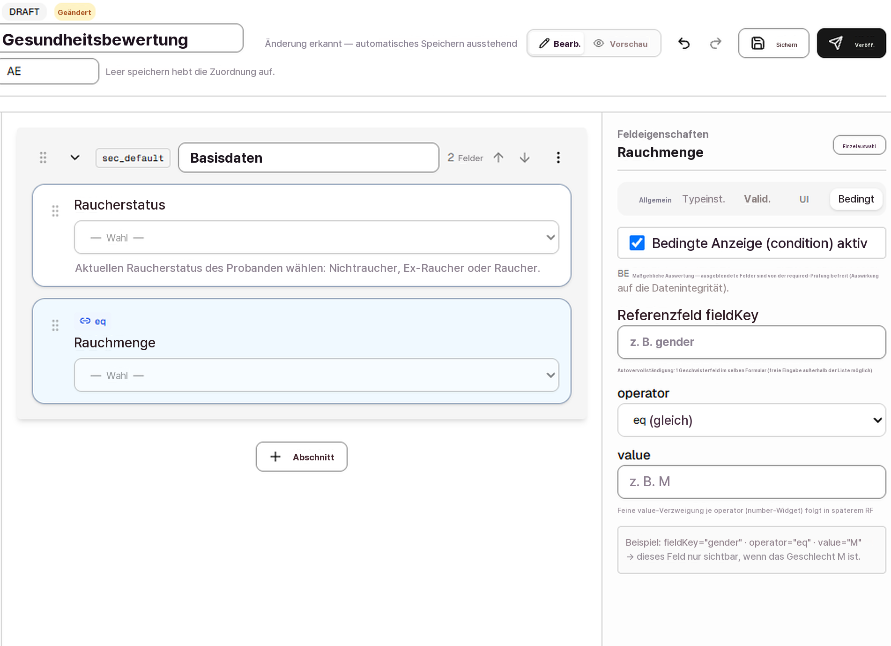
Bedingte Anzeige (condition) aktiv — Wenn aktiviert, werden die folgenden Bedingungseinstellungen angezeigt.
⚠ Bildschirmhinweis — „ausgeblendete Felder sind von der required-Prüfung befreit (Auswirkung auf die Datenintegrität).“ Die Bedingung wird vom System ausgewertet.
Über dem Feld auf dem Canvas erscheint das Badge 🔗 eq und zeigt an, dass eine Bedingung angewendet wird.
Referenzfeld fieldKey — ein anderes Feld im selben Formular, das als Grundlage der Bedingung dient. Geschwisterfelder desselben Formulars werden automatisch vervollständigt; Werte, die nicht in der Liste stehen, können Sie auch direkt eingeben.
operator — die Vergleichsart. Standard ist eq (gleich).
value — der Vergleichswert.
Beispiel unten — fieldKey="gender" · operator="eq" · value="M" → dieses Feld nur sichtbar, wenn das Geschlecht M ist.
Zu beachten
Unbedingt prüfen Datenschäden · Formular nicht abschließbar
- • Wenn Sie eine Bedingung festlegen, kann die Pflichtprüfung entfallen. Solange das Feld ausgeblendet ist, weil die Bedingung nicht zutrifft, wird das Formular abgeschlossen, auch wenn dieses Feld ein Pflichtfeld und leer ist. Dies ist kein Fehler, sondern beabsichtigtes Verhalten.
- • Wird die Bedingung falsch, während bereits ein Wert ausgewählt ist, verschwindet dieser Wert vom Bildschirm. Seien Sie vorsichtig, wenn Sie das Feld, das als Verzweigungskriterium dient, nachträglich ändern.
Leicht missverständliches Verhalten
- • Prüfen Sie die bedingte Anzeige vor Validierungsregeln 4.3. Wer nicht betroffen ist und gar nicht erst gefragt wird, kann weder falsch auswählen noch beim Speichern blockiert werden. Die Validierung ist das letzte Mittel, wenn trotzdem etwas verhindert werden muss.
Hinweis
- • Wenn Sie die Bedingung aktivieren und das Referenzfeld leer lassen, ist die Bedingung nicht erfüllt. Geben Sie unbedingt ②~④ vollständig ein. 6.2
6.2Bedingung festlegen
Überblick
Die in 6.1 aktivierte Bedingung ist vollständig eingegeben. Mit dieser Einstellung wird dieses Feld nur dann in der Eingabemaske angezeigt, wenn der Wert des Felds „Raucherstatus“ 2 ist. Hier zeigt sich der Unterschied zwischen value und label beim Verweis auf eine Einzelauswahl am deutlichsten.
Bildschirmbeschreibung
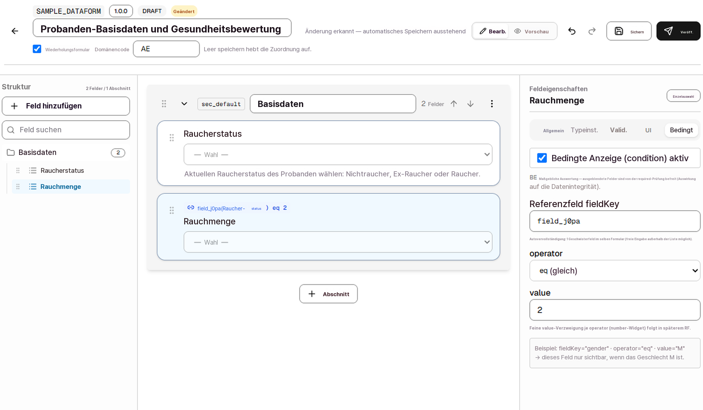
Raucherstatus 2 (Raucher) istReferenzfeld fieldKey = field_j0pa — verweist auf das Feld „Raucherstatus“ im selben Formular.
operator = eq (gleich)
value = 2 — geben Sie nicht das auf dem Bildschirm sichtbare „Raucher“ ein, sondern den gespeicherten Wert (value) dieser Option. 3.2
Ergebnis nach Eingabe von ①~③ — das Badge auf dem Canvas wird zu 🔗 field_j0pa(Raucherstatus) eq 2 konkretisiert.
Das referenzierte Feld „Raucherstatus“ muss sich im selben Formular befinden; dies können Sie im Strukturbaum prüfen.
Beispiel unten — fieldKey="gender" · operator="eq" · value="M" → dieses Feld nur sichtbar, wenn das Geschlecht M ist.
Zu beachten
Unbedingt prüfen Datenschäden · Formular nicht abschließbar
- • ⛔ Geben Sie bei value nicht das label, sondern den gespeicherten Wert ein. Wenn Sie „Raucher“ eingeben, ist die Bedingung nie erfüllt, und dieses Feld wird nie angezeigt. Prüfen Sie zuerst den gespeicherten Wert in der Optionsliste des referenzierten Felds. 3.2
- • ⛔ Wenn Sie den value des Referenzfelds ändern, bricht die Bedingung unbemerkt. Ändern Sie z. B. den value von „Raucher“ von
2aufCURRENT, ist diese Bedingung ohne Fehlermeldung einfach nicht mehr erfüllt — deshalb ist eine Änderung von value nach der Veröffentlichung gefährlich. 3.2 - • Auch wenn Sie den fieldKey des Referenzfelds ändern oder es löschen, bricht die Bedingung. Die Bedingung ist nicht über den Anzeigenamen, sondern über den fieldKey verknüpft. 2.1
Hinweis
- • Bedingungen verkürzen das Formular und reduzieren unnötige Eingaben. Widersprechen sich Bedingungen jedoch, entstehen Felder, die nie angezeigt werden; prüfen Sie daher nach der Einstellung unbedingt in der Vorschau.
Anhang
- 7.1Einstellungen auf einen Blick
7.1Einstellungen des Einzelauswahlfelds auf einen Blick
Einstellungen je Tab
| Tab | Element | Was wird festgelegt | Abschnitt |
|---|---|---|---|
| Allgemein | fieldKey | Tatsächlicher Speicherschlüssel des Werts (nach dem Speichern nicht ändern) | 2.1 |
| label (Anzeigename) | Auf dem Bildschirm angezeigter Elementname | 2.1 | |
| description (Hilfetext) | Ergänzende Beschreibung unter dem Anzeigenamen — in welche Kategorien unterteilt wird | 2.1 | |
| Pflichtfeld | Ob zwingend ausgewählt werden muss (zuerst prüfen, ob die Optionen alle Fälle abdecken) | 2.2 | |
| SDV-Verifizierung | Ob Gegenstand des CRA-Quelldatenabgleichs · ob Verifizierung erforderlich | 2.3 | |
| AE-Bedeutungsrolle | Dieser Typ ist ein Zuordnungsziel — „SAE ja/nein“ u. a. | 1.1 · ※ | |
| „Nicht gemessen“ zulassen | Ob „Unbekannt“ als Wert erfasst werden kann · Anzeigelabel · Indikator | 2.4 | |
| Typeinstellungen | options — value | Gespeicherter Wert (nach der Veröffentlichung nicht ändern) | 3.2 |
| options — label | Auf dem Bildschirm sichtbarer Text (jederzeit änderbar) | 3.2 | |
| options — Aktiv · Reihenfolge · Löschen | Ob die Option angeboten wird · Anzeigereihenfolge · Zeile löschen | 3.2 | |
| Anzeigeart (displayStyle) | Dropdown / Radio | 3.3 | |
| Optionsausrichtung | Anzahl pro Zeile — nur bei Radio angezeigt | 3.4 | |
| Standardwert (defaultValue) | Vorausgewählte Option (per value festlegen · in der Vorschau prüfen) | 3.5 | |
| Validierung | ruleType | Regelart — bei diesem Typ wird Vergleich mit anderem Feld verwendet | 4.2 · 4.3 |
| Vergleichselement · operator · Vergleichsziel | Bedingung im Vergleich mit einem anderen Feld im selben Formular (Vergleich mit value) | 4.3 | |
| message | Bei Verstoß angezeigter Text | 4.3 | |
| Bei Verstoß · Aktiv | Vergleich mit anderem Feld ist auf Speichern blockieren festgelegt · Regel aktiv · inaktiv | 4.3 | |
| UI | Layoutbreite | Breite im 12-col grid (bei Radio nicht verringern) | 5.2 |
| Schreibgeschützt | Anzeigen, aber nicht änderbar | 5.3 | |
| Ausblenden | Nicht angezeigt (gespeicherter Wert bleibt · bleibt in der Pflichtfeldzählung) | 5.3 | |
| placeholder · helpText | placeholder ersetzt — Auswahl — · Auswahlkriterium in helpText | 5.4 | |
| Bedingt | Bedingung aktiv | Ob bedingte Anzeige verwendet wird (von der Pflichtprüfung befreit) | 6.1 |
| Referenzfeld fieldKey | Feld im selben Formular als Grundlage der Bedingung | 6.2 | |
| operator · value | Vergleichsart und Vergleichswert (gespeicherten Wert eingeben) | 6.2 |
Unbedingt merken
Unbedingt prüfen Datenschäden · Formular nicht abschließbar
- • Unterscheiden Sie value und label. In den Daten gespeichert wird value, und auch bedingte Anzeige · Validierung · Standardwert werden alle per value festgelegt. 3.2 · 3.5 · 4.3 · 6.2
- • Ändern Sie value nach der Veröffentlichung nicht. Die Bedeutung bestehender Daten geht verloren, und Bedingungen, die auf diesen Wert verweisen, brechen unbemerkt. 3.2 · 6.2
- • Lassen Sie die zwei leeren Optionszeilen nicht unverändert. Die hellgrauen
M·Männlichsind Beispiele; es entsteht ein Feld ohne Optionen. 3.1 - • Prüfen Sie bei „Vergleich mit anderem Feld“ die Richtung der Bedingung vor der Veröffentlichung — Bei Verstoß ist auf Speichern blockieren festgelegt. 4.3
- • Verringern Sie bei Radio-Feldern nicht die Breite — wenn nötig, Ausrichtung auf 1 (vertikal). 3.4 · 5.2
Leicht missverständliches Verhalten
- • Der Standardwert erscheint nicht in der Bearbeitungsansicht. Er ist nur in der [Vorschau] sichtbar. 3.5
- • Der placeholder ersetzt
— Auswahl —und ist bei Radio nicht sichtbar. 5.4
Hinweis
- • Bei derselben Beziehung hat die bedingte Anzeige Vorrang vor Validierungsregeln — wird nicht gefragt, kann auch nichts falsch sein. 4.3 · 6.1
Nicht in diesem Dokument behandelt
※ AE-Bedeutungsrolle — dieser Typ ist ein Zuordnungsziel, da es jedoch keine Aufnahmen des Einstellvorgangs gibt, wurde kein eigener Abschnitt angelegt. Einzelheiten zur Verwendung finden Sie in den Dokumenten zu AE. 1.1
Anbindung an gemeinsame Codes (CodeGroup) — das System bietet zwar die Möglichkeit, Optionen als projektweite gemeinsame Codes zu verwalten, auf diesem Bildschirm gibt es dafür jedoch kein Element. Da die Optionen in jedem Formular direkt aufgelistet werden müssen, prüfen Sie, ob value und label einheitlich übereinstimmen. 3.2
Automatische Berechnung (calculation) — das Element wird angezeigt, bei diesem Typ aber nicht verwendet. Verwenden Sie es beim Typ Zahl. 3.1
Validierungsregel „Wertebereich“ — kann als Regelart gewählt werden, wird aber nicht benötigt, da bei diesem Typ nur aus Optionen gewählt wird. 4.2